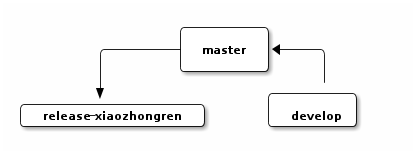
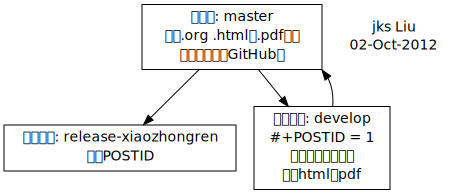

测试
License: CC BY-NC-SA 
文章被托管在：https://github.com/jks-liu/xiaozhongren.com
Table of Contents
1 公式测试：
1.1 例子
\(E = mc^2\)
1.2 使用方法
- C-c C-x C-l
- 公式预览
wordpress上要装WP \(\LaTeX\)插件。
2 代码测试
2.1 例子
#include <iostream> using namespace std; int main(int argc, char *argv[]) { cout << "I love xiaozhongren.com!" << endl; return 0; }
2.2 使用方法
- <s
- 自动展开
- C-c '
- 代码编写
3 表格测试
3.1 例子
| 作用 | 快捷键 | 命令 |
|---|---|---|
| 发布当前buffer | C-c p | org2blog/wp-post-buffer |
| 以草稿形式发布当前buffer | C-c d | org2blog/wp-post-buffer |
| 发布当前buffer作为页面 | C-c P | org2blog/wp-post-buffer-as-page |
| 以草稿形式发布当前buffer作为页面 | C-c D | org2blog/wp-post-buffer-as-page |
4 Ditaa测试
4.1 例子

4.2 使用方法
- C-c C-c
- 生成图片
- C-c C-x C-v
- 显示（关闭显示）图片
5 Graphviz测试
5.1 例子

5.2 使用方法
wordpress需安装Scalable Vector Graphics (SVG)插件。